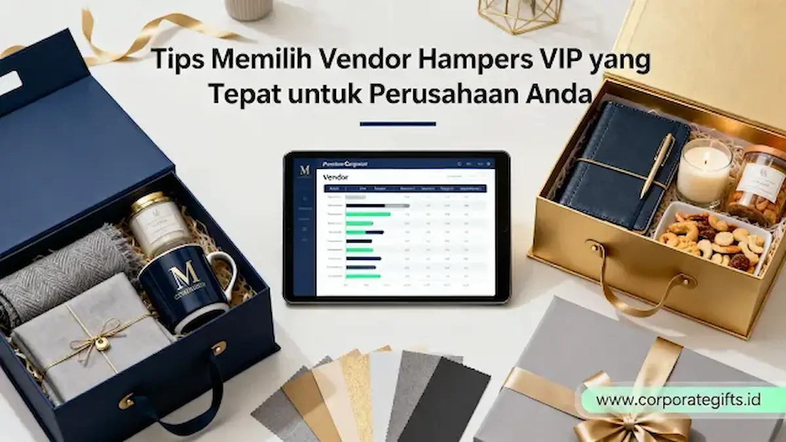

Corporate Gifts ID - Vendor hampers VIP adalah penyedia layanan strategis yang merancang, mengkustomisasi, dan mendistribusikan bingkisan premium khusus untuk kebutuhan apresiasi korporat. Memilih vendor hampers VIP yang tepat sangat penting karena memengaruhi citra profesional perusahaan, kehangatan hubungan dengan klien, serta efektivitas strategi corporate gifting jangka panjang.
Dalam dunia bisnis modern, mengirim hampers VIP kepada jajaran direksi, investor, atau mitra kerja strategis bukan sekadar formalitas tahunan. Ini adalah instrumen komunikasi merek tingkat tinggi yang mencerminkan penghargaan tulus, menjaga loyalitas kemitraan, dan menegaskan reputasi prestisius brand perusahaan Anda.
Poin Kunci Memilih Vendor Hampers VIP yang Tepat:
- Portofolio B2B Terbukti: Pastikan vendor memiliki rekam jejak melayani instansi besar, perbankan, BUMN, atau korporasi multinasional.
- Kustomisasi Branding Penuh: Mampu mengaplikasikan logo dengan teknik deboss foil, plat logam, maupun kartu ucapan berdesain khusus.
- Kurasi Item Berkualitas Tinggi: Memadukan produk kuliner artisan tersertifikasi BPOM/Halal dengan cinderamata lifestyle bernilai guna tinggi.
- Keandalan Waktu & Logistik: Memiliki SOP produksi terstruktur dan armada distribusi aman untuk mencegah keterlambatan di peak season.
- Transparansi Sampel & Legalitas: Menyediakan mockup 3D, pengiriman sampel fisik, serta kepatuhan administrasi faktur pajak resmi.
Mengapa Vendor Hampers VIP Berperan Strategis dalam Branding?
Vendor hampers bukan sekadar penyuplai produk kemasan. Mereka adalah mitra kreatif yang membantu divisi procurement dan marketing menerjemahkan visi brand ke dalam bentuk fisik yang memukau. Vendor yang berpengalaman mampu:
- Menerjemahkan identitas visual perusahaan ke dalam kemasan mewah berstandar tinggi.
- Menjamin keaslian dan mutu material boks (hard box magnetik, kayu pinus, atau leather box).
- Menciptakan pengalaman unboxing yang berkesan dan emosional bagi penerima.
- Mengelola timeline produksi secara ketat agar distribusi paket tiba tepat waktu di hari penting.
Bagi perusahaan berskala besar, bermitra dengan vendor hampers profesional merupakan bagian integral dari corporate gifting management untuk memastikan seluruh anggaran pengadaan memberikan return on relationship (ROR) yang optimal.
5 Ciri-Ciri Vendor Hampers VIP yang Profesional & Terpercaya
Untuk memastikan pengadaan hampers berjalan tanpa hambatan, berikut lima indikator utama yang wajib Anda evaluasi dari calon vendor:
1. Portofolio dan Kredibilitas yang Terbukti
Vendor profesional selalu transparan mengenai rekam jejak kerja sama mereka. Periksa apakah vendor pernah menangani proyek pengadaan untuk korporasi terkemuka atau instansi pemerintah. Vendor tepercaya siap memperlihatkan portofolio pengerjaan fisik maupun katalog digital proyek sebelumnya.
2. Kemampuan Kustomisasi dan Bespoke Branding
Hampers eksklusif memerlukan sentuhan personal yang mendalam. Vendor berkualitas tinggi menyediakan opsi kustomisasi lengkap, mulai dari hot stamp foil logo pada penutup kotak, personalisasi nama penerima, pemilihan warna pita satin sesuai Pantone perusahaan, hingga kartu ucapan berlapis amplop elegan.

Proses kurasi dan perakitan paket hampers korporat dengan standar quality control ketat sebelum pengiriman.
3. Kualitas Produk dan Kurasi Isi yang Premium
Paket hampers untuk klien eksekutif tidak boleh berisi item sembarangan. Vendor terpercaya memiliki tim kurator yang memilih kombinasi produk bernilai tinggi, seperti cookies artisan bersertifikat Halal, set kopi/teh spesial, aroma diffuser rumah mewah, atau executive gift set bernuansa kulit.
4. Estetika Desain dan Visualisasi Mockup 3D
Kemampuan menghadirkan visualisasi mockup 3D pra-produksi sangat membantu panitia mempresentasikan konsep kepada jajaran manajemen. Vendor VIP selalu memperhatikan proporsi tata letak isi, penggunaan shredded paper lembut, serta keselarasan warna antara produk dan kemasan luar.
5. Keandalan Waktu Produksi dan Logistik Nusantara
Ketepatan waktu adalah faktor krusial, terutama menjelang perayaan hari raya seperti Idul Fitri, Imlek, atau Natal. Vendor berpengalaman memiliki alur kerja pabrikasi yang terukur, opsi pengiriman ekspres bertaraf korporat, serta garansi penggantian jika terjadi kerusakan saat proses ekspedisi.
Tabel Kriteria Evaluasi Pemilihan Vendor Hampers
Gunakan matriks perbandingan berikut saat melakukan komparasi beberapa vendor hampers untuk institusi Anda:
| Aspek Evaluasi | Vendor Hampers Biasa | Vendor Hampers VIP Korporat | Dampak bagi Perusahaan |
|---|---|---|---|
| Kemampuan Branding | Hanya stiker tempel standar | Hot stamp foil, grafir plat, custom box | Meningkatkan prestise identitas korporat |
| Kurasi Isi Produk | Produk massal minim variasi | Artisan premium, sertifikasi Halal/BPOM | Menjamin keamanan konsumsi & kepuasan penerima |
| Layanan Mockup | Foto katalog seadanya | Preview 3D digital & sampling fisik | Mempermudah persetujuan anggaran direksi |
| Kapasitas Produksi | Terbatas (puluhan paket) | Kapasitas ribuan paket B2B | Kelancaran distribusi tanpa risiko keterlambatan |
| Legalitas & Pajak | Nota toko biasa tanpa PPN | Badan usaha resmi (PT/CV), Faktur Pajak | Kepatuhan administrasi audit keuangan kantor |
Langkah Praktis Memilih Vendor Hampers VIP Perusahaan
Ikuti tahapan sistematis berikut untuk mempermudah proses kurasi vendor:
- Tentukan Profil Penerima dan Anggaran: Identifikasi segmen penerima (dewan direksi, mitra platinum, atau klien reguler) untuk menentukan alokasi anggaran per paket.
- Buat Daftar Pendek (Shortlist) Vendor: Pilih 2 hingga 3 vendor yang memiliki reputasi kuat dalam penyediaan hampers dan parcel perusahaan.
- Uji Kecepatan Komunikasi: Hubungi tim konsultan vendor untuk menilai responsivitas, keramahan, dan solusi kreatif yang ditawarkan.
- Mintalah Mockup Digital dan Sampel Fisik: Pastikan Anda melihat sampel bahan boks dan cetakan logo secara langsung sebelum menyetujui produksi massal.
- Konfirmasi Timeline dan Legalitas: Sepakati jadwal pengiriman serta pastikan vendor dapat menerbitkan dokumen administrasi faktur pajak resmi.
Kesalahan Umum Saat Memilih Vendor Hampers yang Wajib Dihindari
Hindari beberapa kekeliruan umum berikut agar pengadaan hampers berjalan sukses:
- Tergiur Harga Murah: Menekan anggaran berlebihan kerap berujung pada material boks yang mudah penyok dan produk isi yang kurang berkualitas.
- Pemesanan Terlalu Dekat Hari H: Memesan mepet di masa peak season meningkatkan risiko keterlambatan pengiriman paket ke kantor mitra.
- Mengabaikan Ketahanan Kemasan Saat Ekspedisi: Memilih boks yang tipis tanpa proteksi bubble wrap tebal berisiko merusak bingkisan saat diantar kurir.
- Kurang Memperhatikan Standar Makanan: Tidak memeriksa masa kedaluwarsa dan sertifikasi higienis pada produk makanan/minuman yang disertakan.
Kesimpulan
Bermitra dengan vendor hampers VIP yang tepat adalah langkah strategis dalam menjaga reputasi dan kehangatan relasi bisnis perusahaan Anda. Dengan memprioritaskan kredibilitas rekam jejak, fleksibilitas personalisasi branding, kurasi produk bermutu tinggi, dan ketepatan distribusi, bingkisan perusahaan Anda akan menghadirkan impresi mendalam yang membanggakan.
Sedang merencanakan pengadaan hampers eksklusif untuk perayaan hari raya, reward klien, atau anniversary perusahaan? Konsultasikan ide kemasan dan konsep bingkisan Anda bersama tim spesialis kami di Corporate Gifts ID sekarang juga.
Pertanyaan Seputar Vendor Hampers VIP (FAQ)

Ditulis oleh: Arinda Zakia
Senior Corporate Gifting SpecialistPraktisi riset pasar dan konsultan pengadaan corporate merchandise dengan pengalaman lebih dari 7 tahun. Arinda aktif mengkurasi tren cinderamata ramah lingkungan, etika pemberian hadiah korporasi tingkat direksi (VIP Gifting), serta strategi efisiensi anggaran pengadaan souvenir bagi perusahaan swasta, perbankan, dan BUMN di Indonesia.
Lihat Profil Lengkap & Panduan Lainnya